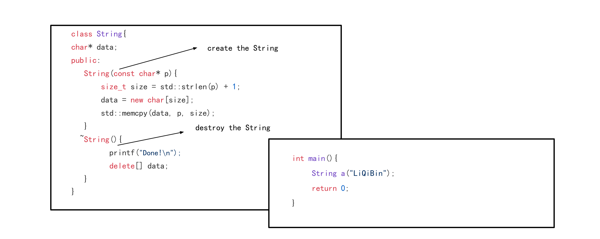

引用:
Introduction
The Rule of Three/Five （三法则/五法则）是为了编写异常安全代码(Exception-safe code)和为了资源管理而提出的经验法则。
The Rule of Three
首先介绍编译器会自动生成的三个特殊的成员函数(Special member funtions)
- Desturctor (析构函数)
- Copy Constructor (拷贝构造函数)
- Copy assignment operator (拷贝赋值运算符)
三法则规定:如果类中定义了以下三个特殊的成员函数的其中一个，则这个应该显式的定义所有的三个特殊的成员函数。
因为默认生成的三个函数通常不能满足我们的使用要求。
默认生成的Copy Constructor和Copy assignment operator执行的是浅拷贝(Shallow Copy)。而我们的类中如果存在指针这类的成员变量,使用默认生成的这两个函数，可能会引起内存泄漏及一系列无法定义的行为。
下面分别介绍这三个特殊的成员函数。
The Desturctor
当类结束它的生命周期的时候，类会自动调用析构函数去销毁这个类。

如上图，当String类运行到main块的末尾的时候结束其生命周期，这个时候类会自动调用析构函数去销毁这个类。
输出如下:
Done!
The assignment operator
使用默认的拷贝赋值符得到的效果就如上图，问题有二个:
- 1 . 当执行
tmp = s的时候原tmp指向的那块内存，就永远不会被delete[]，这造成了内存泄漏。 - 2 . 当
func()执行结束的时候对象tmp的生命周期结束，将会调用String类的析构函数去销毁其申请的资源，这样就把指向LiQiBin处的内存delete[]了，当main函数执行完后,对象a也要销毁其持有的资源，这样就会delete已经delete过的资源，系统报错！
怎么解决这个问题呢? 答案是：使用自己定义的可执行深拷贝的copy assignment operator。
修改代码如下:
/*修改String类即可*/
class String
{
char* data;
public:
String(const char* p) {
size_t size = std::strlen(p) + 1;
data = new char[size];
std::memcpy(data, p, size);
}
~String() {
printf("Done!\n");
delete[] data;
}
String& operator=(const String& that) {
size_t size = std::strlen(that.data) + 1;
delete[] data;
data = new char[size];
std::memcpy(data, that.data, size);
return *this;
}
};
修改代码后执行的结果如下图:
The copy constructor
copy constructor做的事情其实和copy assignment非常类似，都是复制传入的参数类。默认生成的copy constructor也是做shallow copy，类似的默认的情况一般不满足我们的要求，所以我们一般要自己定义深拷贝的版本。
添加copy constructor代码:
与copy assignment用户显式的调用不同copy constructor有时会被编译器隐式的调用,我们必须了解什么时候copy constructor会被调用。
下面的四种情况copy constructor会被调用:
- 1.显式调用copy constructor
int main(){ String a("LiQiBin"); String b(a); /*显式调用copy constructor*/ return 0; } - 2.对象初始化的时候调用copy constructor
注意这种情况与调用copy assignment的区分int main(){ String a("LiQiBin"); String b = a; /*对象初始化的时候调用copy constructor*/ return 0; }int main(){ String a("LiQiBin"); String b("tmp"); b = a; /*调用copy assignment*/ return 0; } - 3.传入参数时调用copy constructor
void func(String s){ /*Do something!*/ } int main(){ String a("LiQiBin"); func(a); /*传入参数时会调用一次copy constructor生成传参*/ return 0; } 4.作为函数的返回值
这段来自维基百科:Return value Optimization
#include <iostream> struct C { C() = default; C(const C&) { std::cout << "A copy was made.\n"; } }; C f() { return C(); /*这里是作为函数的返回值调用copy constructor*/ } int main() { std::cout << "Hello World!\n"; C obj = f(); /*这里是第二点的情况调用copy constructor*/ }但是在不同的编译器有不同的优化,所以得到的结果可能是下面三种情况:
Hello World! A copy was made. A copy was made.Hello World! A copy was made.Hello World! /*本人电脑是这种情况*/
The Rule of Five
五法制:其实也就是比三法制增加了两个特殊成员函数。
- The move constructor
- The move assignment
The move constructor
实际上copy constructor并不能完全覆盖程序员的需求，例如:频繁的创造,复制，删除临时变量是非常的昂贵的，所以就有了move constructor
关于move constructor需要理解左值(lvalue)和右值(rvalue),可以看我以前的一篇博客lvalue and rvalue,move constructor在这篇博客的move semantics部分中做了介绍。
The move assignment
move assignment的作用和move constructor差不多,move assignment通常用来转移资源的管理权。
Example:
在String类中添加move assignment:
String& operator=(String&& that){
printf("move assignment!\n");
if(this!=&that){
delete[] data;
data = that.data;
that.data = nullptr;
}
return *this;
}
调用move assignment:
int main(){
String a("10");
String b("20");
b = a; /*调用copy assignment*/
b = (String&&) a; /*强制转换为右值引用后调用move assignment*/
/*String("Hello UnderWorld")是右值引用,调用move assignment*/
b = String("Hello UnderWorld");
return 0;
}
注意上面执行了b = (String&&) a;就相当于a将资源的管理权转移给了b,所以a在这之后不可用了。
本博客所有文章除特别声明外，均采用 CC BY-SA 3.0协议 。转载请注明出处！